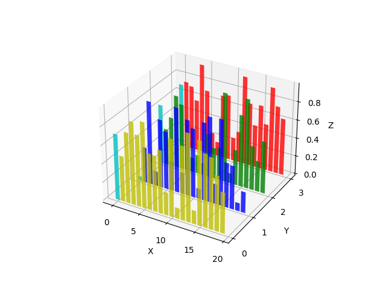

Version 3.0.2
Note
Click here to download the full example code
Demonstrates making a 3D plot which has 2D bar graphs projected onto planes y=0, y=1, etc.
# This import registers the 3D projection, but is otherwise unused.
from mpl_toolkits.mplot3d import Axes3D # noqa: F401 unused import
import matplotlib.pyplot as plt
import numpy as np
# Fixing random state for reproducibility
np.random.seed(19680801)
fig = plt.figure()
ax = fig.add_subplot(111, projection='3d')
colors = ['r', 'g', 'b', 'y']
yticks = [3, 2, 1, 0]
for c, k in zip(colors, yticks):
# Generate the random data for the y=k 'layer'.
xs = np.arange(20)
ys = np.random.rand(20)
# You can provide either a single color or an array with the same length as
# xs and ys. To demonstrate this, we color the first bar of each set cyan.
cs = [c] * len(xs)
cs[0] = 'c'
# Plot the bar graph given by xs and ys on the plane y=k with 80% opacity.
ax.bar(xs, ys, zs=k, zdir='y', color=cs, alpha=0.8)
ax.set_xlabel('X')
ax.set_ylabel('Y')
ax.set_zlabel('Z')
# On the y axis let's only label the discrete values that we have data for.
ax.set_yticks(yticks)
plt.show()
Keywords: matplotlib code example, codex, python plot, pyplot Gallery generated by Sphinx-Gallery